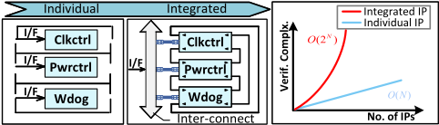
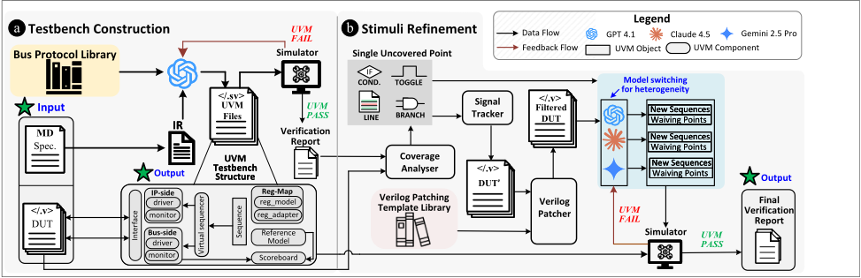
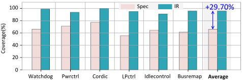
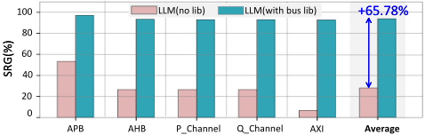

UVMverAI: an Automated LLM-Aided UVM Machine for Subsystem-Level RTL Verification
UVMarvel：面向子系统级 RTL 验证的自动化 LLM 辅助 UVM 机器
简介
论文针对子系统级 UVM 验证中 testbench 搭建与激励生成高度依赖人工、现有 LLM 辅助方法停留在 IP 级且生成激励覆盖率平均低于 40% 的问题，提出自动化验证框架 UVMarvel。方法分两阶段：Stage a 用五字段中间表示（IR）统一多模态规格信息，配合 Bus Protocol Library 提供各总线协议的 UVM 骨架，引导 LLM 自动生成子系统级 UVM testbench；Stage b 通过 Coverage Analyser 解析覆盖率报告，Signal Tracker 做跨文件信号依赖回溯，Verilog Patcher 重建代码结构生成 Filtered DUT，驱动三个 LLM 迭代生成新激励与 waiver 候选。在覆盖 APB/AHB/AXI/P-Channel/Q-Channel 接口的工业子系统基准上，框架取得 93.33% 的 testbench 生成成功率与 95.65% 平均代码覆盖率，4.5 小时自动运行达到 90% 覆盖率，较人工流程加速 20.17 倍。该工作与团队 UVM/覆盖率驱动的子系统验证交付流程及验证自动化方法学沉淀高度契合。
问题
验证占 IC 前端开发近 70% 工作量；子系统级 UVM testbench 搭建与高质量激励生成仍需大量人工编码、反复运行 EDA 工具以及深入的协议与微架构知识。现有 LLM 辅助验证工作（MEIC、UVLLM、AssertLLM、UVM2）局限于 IP 级：面对子系统级多 IP 交互、丰富总线接口与含时序波形/框图的多模态规格文档时无法可靠搭建 testbench，且生成激励难以覆盖跨 IP 长依赖链、罕见事件序列与深层状态转换，导致覆盖率过早收敛（平均低于 40%）。
方法
两阶段 LLM 驱动框架。Stage a（testbench 构建）：将规格与 RTL 转换为五部分 IR（Module Name、Interface Description、Register Configuration、Timing Characteristics、Functional Description），统一环境层次、寄存器模型与时序/场景信息；Bus Protocol Library 为每个协议提供 interface/driver/monitor/agent 的 UVM 骨架，LLM 仅在指定区域（如配置参数）内特化，协议控制流与握手结构保持固定。Stage b（激励精炼）：Coverage Analyser 将 HTML 覆盖率报告压缩为按类型/模块分组的结构化未覆盖项；Signal Tracker 从未覆盖点种子信号出发做单文件追踪（Algorithm 1）与跨文件递归扩展（Algorithm 2），得到依赖切片并关联顶层 I/O 入口；Verilog Patcher 用模板库补全缺失的 case/always/module 结构生成 Filtered DUT；三个不同 LLM 基于 Filtered DUT 生成候选序列（在原始 DUT 上实例化仿真并测量覆盖率），并标记不可达点为 waiver 候选，编译/仿真错误回喂修复形成闭环。实验基于 Synopsys VCS，默认模型 GPT-4.1，对比基线 Claude 4.5 与 Gemini 2.5 pro。
关键结果
testbench 生成成功率（SRG）整体 93.33%，仅 AXI 子系统失败（AW/W/B 握手协调不一致）；对比方法 MEIC 与 UVM2 在子系统级 SRG 为 0%
平均代码覆盖率 95.65%，在基准全部覆盖率指标上高于 MEIC 与 UVM2
从人工提供的 IR 出发到 90% 代码覆盖率需 4.5 小时自动化执行，比人工验证流程快 20.17×
使用 IR 输入相比直接输入原始规格平均提升覆盖率近 30%
Bus Protocol Library 使 SRG 提升 65.78%；AXI 无库时成功率低于 7%，有库时超过 90%
激励精炼阶段 Filtered DUT 平均覆盖率增益 11.53%，高于 ML 方法 Vizier 的 6.66% 与直接喂入完整 DUT 的 3.35%
GPT-4.1、Claude 4.5、Gemini 2.5 pro 在相同 IR/骨架/Filtered DUT 下覆盖率非常接近，框架对底层 LLM 选择鲁棒
创新点
自称首个面向子系统级 UVM 验证的自动化 LLM 框架。与 IP 级先行工作（MEIC、UVLLM、AssertLLM、UVM2）的区别：(1) 用验证导向 IR 将多模态规格（波形、框图、文本）压缩为 LLM 可直接使用的结构化描述，补足既有工作忽略的 test planning 阶段；(2) 用 Bus Protocol Library 以'骨架+受限特化'方式注入协议语义，而非让 LLM 从冗长协议手册自行推断；(3) 用 Signal Tracker+Verilog Patcher 生成依赖保持的 Filtered DUT，替代 AST 依赖树（UVLLM/STRIDER 路线）与 ML 黑盒搜索（Vizier），使 LLM 能推导跨 IP 多步激励序列。
团队参考意义
相关度级别：high
命中能力域：2.4 设计验证方法学 | 2.7 EDA/验证自动化与 AI 辅助
理由：团队核心交付物即 UVM 验证环境构建与覆盖率收敛，覆盖 LPDDR/UCIe/HBM4 等多协议子系统，论文直接命中 2.4（UVM 平台、覆盖率驱动验证、回归闭环）与 2.7（LLM 辅助验证自动化、可复用验证资产）。其 IR+协议骨架的思路与团队'沉淀可复用方法学与自动化能力'的定位一致；Signal Tracker/Filtered DUT 的依赖切片方法可直接用于团队子系统级未覆盖点归因与 waiver 分析。论文基准中的 P-Channel/Q-Channel 低功耗控制器与团队电源控制类 IP 验证场景直接对应。
建议动作：深入精读并做内部分享
中文全文
arXiv:2605.04704v2 [cs.AR] 2026年5月7日
UVmarvel: an Automated LLM-aided UVM Machine for Subsystem-level RTL Verification ∗
Junhao Ye 1 , 2 , Dingrong Pan 2 , Hanyuan Liu 1 , 2 , Yuchen Hu 1 , 2 , Jie Zhou 1 , 2 , Ke Xu 1 , 2
1 Southeast University, China 2 National Center of Technology Innovation for EDA, China 3 University of York, UK 4 City University of Hong Kong, Hong Kong † Corresponding author: zhejiang.uk@gmail.com
, Xinwei Fang 3 , Xi Wang 1 , 2 , Nan Guan 4 , Zhe Jiang 1 , 2 †


(b) Comparison of verification complexity between individual and integrated IPs. Interactions and constraint couplings cause growth of complexity during integration.
Figure 1. Verification dominates IC front-end development. While modulelevel complexity scales linearly, subsystem-level verification grows exponentially due to inter-IP dependencies. (Verif.: Verification, TB: testbench, Refi.: Refinement, Constr.:Construction, I/F: Interface, Complx.: Complexity)
automate error detection and repair in Verilog code, ensuring comprehensive verification; AssertLLM[44] utilises three customized LLMs to generate SystemVerilog Assertions from specification documents for RTL verification, showing that the LLMs can assist with debugging and localized test generation. Among them, UVM2 [46] is the first attempt at UVM automation verification, generating agents, sequences, and basic stimuli end-to-end. Yet, these advances remain confined to the IP level, where design interactions are local and protocol reasoning is relatively contained.
Even when a UVM testbench is available, the generated stimuli still achieve low coverage, average below 40%. They fail to exercise
Challenges. Extending LLM-aided UVM verification beyond the IP level to an SoC subsystem creates a new set of challenges across the verification pipeline, from constructing the UVM testbench to generating stimuli. Even on a simple subsystem (a P-channel power controller), the framework repeatedly failed to assemble a UVM testbench once several interface signals were absent (Sec. 4.5). Unlike IP-level designs, subsystems present richer bus interfaces and more intricate control paths, documented in lengthy specifications with timing waveforms and block diagrams, which cause an exponential growth in complexity with the number of IP modules, as shown in Fig. 1b. This multi-modal documentation currently exceeds the interpretive capacity of the general-purpose LLMs, making automatic assembly of a correct subsystem-level UVM testbench unreliable.
Abstract
验证是集成电路（IC）开发中的主要瓶颈，消耗了近 70% 的总工作量。尽管通用验证方法学（UVM）通过结构化的验证环境提升了复用性，但构建子系统级 UVM 测试平台和生成高质量激励仍需要大量的手工编码、反复的 EDA 工具运行，以及深厚的协议与微体系结构专业知识。我们提出了 UVMarvel，一个利用大语言模型（LLMs）为子系统级寄存器传输级（RTL）构建 UVM 测试平台的自动化验证框架。UVMarvel 引入了中间表示（IR）和总线协议库（Bus Protocol Library），将异构的规格说明转换为协议正确的子系统级 UVM 测试平台，并采用信号跟踪器（Signal Tracker）和 Verilog 补丁库（Verilog Patching Library）来指导基于 LLM 的激励精化。UVMarvel 是首个能够跨主流总线协议自动构建子系统级 UVM 测试平台的框架，其平均代码覆盖率达到 95.65%，同时将验证时间从数个人工工作日缩短至 4.5 小时的自动化执行。
1 Introduction
为了减轻这种人工负担，各公司在 UVM 之上引入了模板驱动的脚本流程[14, 19, 33]。这些流程将重复性强且结构良好的任务自动化，例如目录初始化、代码骨架生成，或基本的寄存器与序列模板，从而提升了一致性。然而，由于这些工具只是展开预定义模板，并不理解微架构意图，因此无法推断协议时序、事务语义、驱动器/监视器行为或功能约束。随着设计的演进，工程师必须手动填补这些语义鸿沟，而覆盖率收敛仍然依赖专家投入而非自动化。
敏捷硬件开发推动现代片上系统（SoC）项目走向快速迭代与频繁的设计修订，使验证团队承受着跟上快速变化设计的压力。如图 1a 所示，验证已成为最主要的瓶颈，占据了整个前端周期近 70% 的时间[17]。为应对这种复杂性，工业界流程主要依赖 UVM。尽管 UVM 具有结构化特性，但在实践中它仍然是手动的，为真实设计搭建完整的测试平台需要深厚的工程专业知识。
LLM 的最新进展为打破这一瓶颈创造了新的机遇。与模板系统不同，LLM 能够处理自然语言规格说明、RTL 结构、协议规则以及设计意图描述[5, 16, 24, 26, 29, 35, 41]，从而能够推理传统脚本无法捕捉的行为。已有工作例如 MEIC[42] 采用双微调 LLM 结合 RTL 工具链，实现 Verilog 中错误检测与纠正的自动化；UVLLM[21] 将 LLM 与 UVM 方法论相结合，以针对角点行为、跨多个 IP 的长依赖链、罕见事件序列以及复杂的状态转换。例如，子系统的行为往往取决于必须逐步编排的多组件序列（例如电源请求/应答握手），而 LLM 倾向于生成简单、重复的模式，这些模式迅速穷尽显而易见的情形，却遗漏更深层的角点。在缺乏对 IP 间依赖关系的清晰认识的情况下，LLM 无法可靠地推导出覆盖所有功能点所需的精细序列，导致覆盖率过早收敛。贡献。我们提出了 UVMarvel，这是首个由 LLM 驱动、面向基于 UVM 的子系统级验证的自动化框架。为了自动构建子系统级 UVM 测试平台，UVMarvel 将面向验证的中间表示（IR）与可扩展的总线协议库（Bus Protocol Library）相结合，使 LLM 能够解释跨异构接口的结构语义与协议行为。在激励精化方面，UVMarvel 采用信号跟踪器（Signal Tracker）提取跨模块的 IP 间依赖路径，并采用 Verilog 补丁模板库（Verilog Patching Template Library）将每条路径提炼为最小语义块，使 LLM 能够推导出提升覆盖率所需的精细多步序列。作为一个为 LLM 提供对设计结构与执行行为的子系统级访问的统一解决方案，UVMarvel 实现了 95.65% 的工业级覆盖率。总线协议库与 Verilog 补丁模板库已在 https://github.com/SEU-ACAL/reproduce-UVMarvel-DAC-26 开源。
∗ 本文已被 DAC 2026 录用，并将收录于会议论文集中。
Junhao Ye 1 , 2 , Dingrong Pan 2 , Hanyuan Liu 1 , 2 , Yuchen Hu 1 , 2 , Jie Zhou 1 , 2 , Ke Xu 1 , 2 , Xinwei Fang 3 , Xi Wang 1 , 2 , Nan Guan 4 , Zhe Jiang 1 , 2 †

2 UVMarvel: An Overview
阶段 a 旨在构建测试平台。子系统的信息往往分散在规格说明与寄存器传输级（RTL）之中，这使得大语言模型（LLM）难以理解其结构和接口行为。为了提供统一的视图，我们将这些材料转换为一种汇总了模块、连接关系和接口角色的中间表示（IR）。由于子系统的行为还进一步依赖于 LLM 难以轻松提取的协议规则，我们提供了总线协议库（Bus Protocol Library）以给出精确的事务指导。在这些支持下，
为了加速子系统级 RTL 的验证循环，UVMarvel 将 LLM 辅助集成到标准通用验证方法学（UVM）工作流程中，并将整个过程组织为两个阶段，如图 2 所示。该框架以规格说明和 RTL 作为输入，构建完整的 UVM 测试平台，并生成包含错误日志、豁免候选项和覆盖率结果的最终验证报告。
LLM 会生成 UVM 测试平台，并与被测设计（DUT）一同执行，以产生首份验证报告。
阶段 b 旨在提升覆盖率。问题在于，初始激励通常难以激发深层的多 IP 交互和长依赖链，从而导致覆盖率过早收敛。为解决这一问题，覆盖率分析器会将报告分解为单个未覆盖点。每个未覆盖点都会由 Signal Tracker 进行检查，以识别 RTL 中相关的信号路径。随后，补丁步骤对 Verilog 结构进行修补，生成一个保留了关键依赖链的紧凑切片，从而得到过滤后的 DUT（即仅包含与关键路径相关代码的 DUT）。该过滤后的 DUT 与未覆盖点相结合，为 LLM 提供了生成额外激励或有合理依据的豁免候选项所需的上下文。新增激励被加入后，测试平台会在原始 DUT 上重新执行以提升覆盖率，同时生成最终验证报告。
3.1 Intermediate Representation
实践中的验证通常从测试计划（test plan）开始（图 1a），在这一阶段，工程师解读规格说明，并将设计意图分解为具体的验证点。然而，现有的基于 LLM 的方法却对这一规划阶段投入甚少 [3, 8, 43]。
在这一观察结果以及标准验证方法学文档 [2, 4, 7, 36] 的指导下，我们构建了一个由五个部分组成的中间表示（IR），其组成部分包括模块名称（Module Name）、接口描述（Interface Description）、寄存器配置（Register Configuration）、时序特性（Timing Characteristics）和功能描述（Functional Description），如图 3 所示。该 IR 将 UVM 环境、agent、
从 UVM 测试平台的视角来看，我们需要的信息比规格说明所暴露的内容具体得多：(i) 对于环境层次结构（uvm_env、uvm_agent、uvm_driver、uvm_monitor）而言，它必须知道 DUT 是如何被实例化的，以及 DUT 如何与外部系统进行通信；(ii) 对于 uvm_reg_block 及其适配器（adapter）而言，它需要可编程状态方面的信息（存在哪些寄存器、这些寄存器被映射到何处、如何复位以及如何访问）；(iii) 对于序列（sequence）生成而言，它需要接口上的时序假设，以及应当加以激励的关键功能场景和边界情况（corner case）。在实践中，人类验证工程师在开始编写 UVM 代码或测试计划之前，所收集的正是这些信息。

寄存器模型和场景构建所需的信息提炼为一种以验证为中心的描述，供 LLM 直接使用。
3.2 Bus Protocol Library
在构建子系统级 UVM 验证平台（testbench）时，总线侧组件（例如 driver、monitor、agent 和 interface）是不可或缺的：没有它们，子系统既无法互连其 IP 模块，也无法端到端地运行其行为。工业级验证 IP（VIP）将协议规则封装为可复用的 driver、monitor 和 checker [20, 30, 38]，但这些 VIP 既无法从异构的规范中综合出新的、面向特定设计的总线组件，也无法以 LLM 能够适配的形式暴露协议结构。1
基于这一思路，我们构建了一个总线协议库（Bus Protocol Library），以辅助我们的框架生成总线侧 UVM 组件。对于每种受支持的协议，该库都提供 interface、driver、monitor 和 agent 的 UVM 骨架（skeleton）。在生成过程中，框架利用 IR 中的协议信息来选择相应的骨架，并提示 LLM 利用其余的 IR 细节（例如信号名称、分组、位宽和地址范围）对这些骨架进行特化，如图 4 所示。为了在不同设计之间保持协议语义的一致性，LLM 仅被允许修改骨架中的指定区域（例如配置参数），而协议控制流和握手结构保持固定。这样一来，协议语义来自协议库，而 LLM 主要负责将其适配到每个 DUT 实例。
主流总线协议中编码了丰富的顺序规则、握手关系和时序依赖，其官方规范冗长且形式各异，常常混杂着时序图、波形图和描述性文字。即使有这些文档可用，由于上下文有限、长程依赖以及多模态产物，当前的 LLM 也难以将协议手册转化为正确的 UVM 组件 [9]。与此同时，这些协议依赖于少量有规律的行为模式，而在约束的引导下，LLM 能够高效地阅读和修改结构化代码。这促使我们将协议行为表示为一组简洁且人类可读的 UVM 骨架，用以刻画稳定的请求/响应规则和时序规则，然后再让 LLM 将这些骨架特化到每个 DUT。
1 在我们的初步 SoC 实验（第 4.5 节）中，一旦某些接口信号被省略，被要求直接构建总线侧组件的通用 LLM 便反复无法组装出正确的子系统级 UVM 验证平台。

3.3 Coverage Analyser
在借助 IR 和 Bus Protocol Library 构建 UVM 验证平台之后，验证流程便进入仿真阶段。每次运行都会生成一份覆盖率报告，通常表现为将覆盖率数据与 UI 标记混杂在一起的大型 HTML 页面。这种格式便于人工浏览，却不适合 LLM，因为其中大部分 token 都是版式噪声，而有用的覆盖率条目则散布在众多章节之中。为了使覆盖率反馈变得可用，我们引入了覆盖率分析器（Coverage Analyser），将这些报告转换为紧凑的、面向任务的摘要。
该分析器以 HTML 覆盖率报告为输入，并对其中的覆盖率类别进行解析。针对每个类别，它会提取所有未覆盖或部分覆盖的条目，以及层次化名称和源文件等必要的上下文信息。随后，它将这些条目按覆盖率类型和模块分组，以结构化文本的形式输出，并馈送给 LLM。这样做去除了 UI 样板内容，只呈现未覆盖的目标，从而使 LLM 能够专注于生成额外的激励，以填补剩余的覆盖缺口。
3.4 Signal Tracker
在收集到覆盖率反馈后，UVMarvel 会分析某些覆盖点为何仍未被覆盖。在实际应用中，LLM 生成的激励往往使许多深层边界用例（corner case）未被测试，导致覆盖率偏低。这些缺失的用例通常是深层边界场景，其激活依赖于跨越多个 IP 和多个周期的长信号链，例如握手。要命中这些覆盖点，需要按特定的顺序和时间驱动正确的信号。在子系统级 RTL 中，相关的赋值和条件散布在众多文件和 always 块中，因此 LLM 难以直观地看出某个未覆盖信号是如何回溯连接到可控输入的。
Algorithm 1: Single-File Signal Tracing

Junhao Ye 1 , 2 , Dingrong Pan 2 , Hanyuan Liu 1 , 2 , Yuchen Hu 1 , 2 , Jie Zhou 1 , 2 , Ke Xu 1 , 2 , Xinwei Fang 3 , Xi Wang 1 , 2 , Nan Guan 4 , Zhe Jiang 1 , 2 †
Algorithm 2: Cross-File Recursive Tracing for Subsystems
3.5 Verilog Patcher
如第 3.4 节所述，Signal Tracker 会识别与每个未被覆盖的覆盖点存在因果关联的 RTL 语句和信号，并将它们关联到相关的顶层接口。然而，这些语句一旦从其原始文件中提取出来，就会分散在不同的 always 块和模块中，并且往往会丢失使其成为合法 Verilog 代码所需的头部和周围控制结构。尽管大语言模型（LLM）能够容忍一定的不完整性并编辑部分结构化的程序 [23, 47]，但它们仍然需要基本的语法单元来理解控制流和数据流。
为了恢复这种最小结构，我们提出了 Verilog Patching Template Library 以及使用该库的 Patcher。该库为规范的 RTL 构造提供了一小组模式，包括 module 外壳、always 块、case 块、连续赋值和实例级连接，每种模式仅保留其必要的语法形式。在打补丁过程中，源自同一构造的语句会被分组并附加到相应的模板上。例如，如果 Signal Tracker 收集了来自某个 case 块的分支赋值语句，但周围的 case / endcase 缺失，Patcher 会应用 case 块模板来重建头部和结束关键字；如果某条赋值语句原本位于某个 always 块内但现在被孤立出来，Patcher 会使用 always 块模板重新引入最小的过程包装。

工作流程如下。我们获取 Signal Tracker 报告的关键语句，Verilog Patcher 检查周围的 RTL，以判断每个片段来自 case 块、always 块还是 module 外壳，然后从库中选择匹配的模板。它补全缺失的结构，生成打过补丁的代码版本，即 Filtered DUT。如图 5 所示，左侧显示了不完整的 case 和 always 片段（红色），右侧则显示了补丁后的版本，其中恢复了 default / endcase 关键字，并包含一个带有适当敏感列表的外层 always 块。随后，该 Filtered DUT 会在激励细化阶段被提交给各个 LLM。
3.6 LLM-Guided Sequence Execution
在 UVM 验证平台中，序列（sequence）是激励的执行载体：它决定将哪些事务（transaction）施加到 DUT 上，以及施加的顺序和时序。在我们的框架中，LLM 基于 Filtered DUT 和未覆盖点进行推理，但所有生成的序列都在原始的子系统级 UVM 验证平台上实例化并运行，因此覆盖率始终是在原始 DUT 上测量的。
为避免依赖单一模型的判断，我们采用三个不同的 LLM 来进行覆盖率分析和序列生成，这有助于减少偏差并探索更广泛的激励空间。在给定 Filtered DUT 和未覆盖项后，各 LLM 提出候选序列，这些序列在原始 DUT 上实例化并进行仿真。在此循环过程中，还会要求模型标记那些看起来本质上不可达的覆盖点；这些覆盖点被收集为豁免候选（waiver candidates），并可在最终覆盖率报告中标记为已豁免（waived）。如果某个候选序列导致编译或仿真错误，错误信息会被反馈给 LLM，以修复或丢弃该序列并再次尝试，从而闭合我们框架的反馈回路。
| Design Name | Protocol | Description | Module Counts | Line Counts |
|---|---|---|---|---|
| Watchdog | APB | detects failures via a programmable counter, triggers an interrupt, and resets if ignored, with APB-configurable locked registers. | 3 | 1500+ |
| Pwrctrl | APB | provides APB register control for SCP power, clock, and reset signal management. | 9 | 2000+ |
| Cordic | AHB | provides hardware acceleration for trigonometric and square root calculations. | 3 | 1100+ |
| IdleControl | Q-Channel | manages AXI and DMA interfaces, entering idle/stop states and accepting or rejecting low-power requests based on interface activity. | 3 | 800+ |
| LPctrl | P-Channel | enables safe CDC and low-power data exchange by using a low-power channel. | 8 | 1500+ |
| Busremap | AXI | converts master-slave signals, providing timing isolation, synchronisation, and transaction tracing for secure, efficient data exchange. | 10 | 3000+ |
| Design Name | Protocol | Description | Module Counts | Line Counts |
| Design | Code Coverage (%) | Functional Coverage (%) |
|---|---|---|
| Watchdog | 98.84 | 100 |
| Pwrctrl | 93.66 | 90.64 |
| Cordic | 100 | 100 |
| IdleControl | 94.9 | 96.12 |
| LPctrl | 90.83 | 89.33 |
| Busremap | 95.66 | 98.27 |
| Design | Code Coverage (%) | Functional Coverage (%) |
4 Evaluation
Setup. Weevaluate UVMarvel using LLM agents deployed through the ChatGPT API, with GPT-4.1 as the default model and Claude 4.5/Gemini 2.5 pro as comparative baselines. All generated testbenches are compiled and simulated using Synopsys VCS.
4.1 Evaluation Metrics
生成成功率（SRG）。该指标衡量生成的 UVM 测试平台在语法上有效且功能正确的频率。对于每个设计，我们让大语言模型（LLM）总共生成 𝑁 个测试平台。若某次生成满足以下条件，则计为成功：(i) 测试平台能够无错误地完成完整的 VCS 编译与仿真流程；(ii) 在相同的回归激励下，所有检查器均通过，且观测到的输出与由经验丰富的验证工程师构建的参考结果相匹配。成功率为
覆盖率。在测试平台于 VCS 上成功运行后，我们报告由仿真器收集的代码覆盖率和功能覆盖率。代码覆盖率包括：
功能覆盖率通过用户定义的 covergroup 和 coverpoint 来度量，用于追踪指定的场景、事务和状态组合是否已被执行。2
4.2 Benchmark
与 RTLLM [28]、Verilog-Eval [25] 和 UVM2 [46] 等作用于孤立 RTL 模块的 IP 级基准不同，我们的评估基于工业界子系统级设计，反映了真实的验证挑战。如表 1 所总结，这些基准涵盖通过 APB、AHB、AXI、PChannel 和 Q-Channel 接口互连的异构 IP。
2 我们在对比中关注代码覆盖率，因为它直接定义在 RTL 结构之上，因而可以在不同设计与方法之间进行比较。而功能覆盖率则依赖于工程师定义的 covergroup，反映的是项目特定的意图；在实践中，通常只有在代码覆盖率超过约 90% 之后才会考察功能覆盖率，即便如此它仍然带有主观性。为保持评估的客观性，所有对比研究和消融研究均以代码覆盖率作为主要指标，除非另有说明，文中所述覆盖率均指代码覆盖率；为完整性起见，我们仍在表 2 中使用由经验丰富的工程师编写的 covergroup 报告了功能覆盖率。
4.3 Overall Framework Effectiveness
SRG of testbench generation. UVMarvel achieves an overall SRG of 93.33% across all subsystem components: only AXI-based subsystems fail, mainly due to incorrect coordination between AXI channels (e.g., inconsistent AW/W/B handshakes). In contrast, existing testbench-generation work (e.g., MEIC[42] and UVM 2 [46]) achieves 0% SRG at it, because these methods are limited to IP-level RTL and cannot handle register configuration, bus transactions, and other issues that arise only in subsystem-level RTL.
Execution time. UVMarvel covers both UVM testbench construction and stimuli refinement. Starting from a human-provided IR and running until code coverage reaches 90%, our framework takes 4.5 hours on the benchmark subsystem, which is 20.17 × faster than the manual verification flow, as shown in Fig. 6. In other words, subsystem-level verification tasks that previously required several working days of human-driven UVM development and regression are now completed within an hour-scale automated run.
Coverage. UVMarvel reaches 95.65% average code coverage. We compare against two automated stimuli-generation baselines: MEIC[42], relying on random stimuli, and UVM 2 [46], activating LLM capabilities through structured prompts and templates. As both lack bus-protocol knowledge, we provide them with a preconstructed subsystem-level UVM testbench and Bus Protocol Library used by UVMarvel so that the comparison isolates the stimuli Coverage/%
![Figure 6. End-to-end verification time: UVMarvel vs. experts (across all benchmarks). We exclude the test planning/IR authoring phase (0𝑡 0 ) from time evaluation to ensure precision-although this slightly lowers the acceleration ratio- to aligns UVMarvel's automated verification objectives with manually defined coverage goals, guaranteeing fair and objective experimental results. UVMarvel achieves 90% coverage nearly twenty times faster than manual verification and converges to an industrial-grade final coverage level comparable to the expert flow. ( 𝑡 0 : end of IR/test planning, 𝑡 1 : 90% coverage by UVMarvel , 𝑡 2 : coverage closure by UVMarvel , 𝑡 3 : 90% coverage by experts, 𝑡 4 : coverage closure by experts, 𝛿𝑇 1 : time for UVMarvel to reach 90% coverage, 𝛿𝑇 2 : time for experts to reach 90% coverage)](assets/p098/figures/fig_8.png)
5
1 2 2 1 2 1 2 1 2 1 2
Xinwei Fang , Xi Wang , Nan Guan , Zhe Jiang
Junhao Ye , , Dingrong Pan , Hanyuan Liu , , Yuchen Hu , , Jie Zhou , , Ke Xu , , 3 1 , 2 4 1 , 2 †
![Figure 7. Code coverage of MEIC [42], UVM2 [46], and UVMarvel across six benchmark tests, evaluated using five coverage components.](assets/p098/figures/fig_9.png)

generation capability. As shown in Fig. 7, UVMarvel achieves higher code coverage on all metrics in our benchmark.
4.4 Impact of IR on Stage a
我们通过比较两种设置来评估中间表示（IR）的影响：一种是大语言模型（LLM）仅获得原始规格说明，另一种是向其提供 IR。如图 8 所示，使用 IR 使覆盖率平均提升近 30%，表明 IR 并不仅仅是对规格说明的简单改写。深入观察后我们发现，在 spec-only 设置中，LLM 常常实例化出不完整的环境，例如遗漏总线监视器，或未能将寄存器模型连接到相应的总线代理，导致被测设计（DUT）的大部分从未被驱动。通过以可预测、可组合的格式呈现设计意图，IR 帮助模型推断握手方向、事务顺序和接口语义，从而生成更完整、更有效的子系统级 UVM 测试平台。
4.5 Impact of Bus Protocol Library on Stage a
如图 9 所示，提供总线协议库（Bus Protocol Library）使 SRG 提升了 65.78%，这表明 LLM 难以直接从规格说明中推断协议行为。这一挑战在 AXI 上尤为突出，因为其握手模式和解耦通道引入了相当复杂的顺序、响应和背压约束。在没有指导的情况下，AXI 的成功率低于 7%；而借助协议库，成功率则超过 90%。
我们进一步通过对比两种设置来评估总线协议库的作用：（1）在不提供协议库的情况下对 LLM 进行提示；（2）将协议库作为指导提供给 LLM。在这两种情况下，所有非总线类 UVM 组件均保持固定并作为上下文提供；LLM 仅被要求生成总线侧组件。
4.6 Impact of Signal Tracker & Verilog Patcher on Stage
We evaluate the effect of the Signal Tracker and Verilog Patcher by measuring score coverage improvement during refinement. Prior work has shown that machine learning can assist in exploring design and parameter spaces [1, 6, 10-13, 15, 18, 22, 27, 31, 32, 34, 37, 39, 40], so we also compare against a representative ML-based optimisation approach. Concretely, we adopt Google's open-source Vizier framework [22] as an ML-based refinement method.


| Design Name | GPT4.1 | Claude4.5 | Gemini2.5pro |
|---|---|---|---|
| Watchdog | 98.7 | 98.7 | 98.84 |
| Pwrctrl | 93.4 | 93.66 | 93.66 |
| Cordic | 100 | 100 | 100 |
| IdleControl | 94.9 | 94.8 | 94.6 |
| LPctrl | 90.7 | 90.7 | 90.83 |
| Busremap | 95.4 | 95.66 | 95.6 |
| Design Name | GPT4.1 | Claude4.5 | Gemini2.5pro |
Using the coverage of Stage a as the baseline, we compare three refinement strategies: feeding the LLMs the full DUT, refining stimuli with Vizier, and feeding the LLMs the Filtered DUT. As shown in Fig. 10, the Filtered DUT achieves the largest average gain (11.53%), while Vizier [22] and the raw DUT yield only 6.66% and 3.35%, respectively. These results lead to two observations. (1) When applied directly to the full subsystem-level RTL, the LLMs make limited progress in improving coverage; even though Vizier [22] requires many optimisation iterations and computation, it copes better with the large search space than unguided LLM refinement. (2) Once we provide compact and dependency-preserving context through the Filtered DUT, the LLMs surpass both the raw-DUT and ML baselines in coverage gain, suggesting that the LLMs have potential for verification when combined with appropriate structural guidance.
4.7 Code coverage achieved by different LLMs
为了降低依赖单一模型而可能遗漏边界情况的风险，Stage b 在生成新序列时采用了三种不同的大语言模型（LLM）。如表 3 所示，在相同的中间表示（IR）、协议脚手架和 Filtered DUT 下，这三种模型取得了非常相近的覆盖率。这种跨模型的趋同性表明，UVMarvel 对 LLM 的选择具有鲁棒性；即使底层模型发生变化，其覆盖率提升依然保持稳定。
6
5 Conclusion
我们提出了 UVMarvel，这是首个基于 UVM 的子系统级 RTL 验证框架。通过将 IR 与 Bus Protocol Library 相结合，UVMarvel 能够自动构建子系统级 UVM 测试平台；并通过将 Signal Tracker 与 Verilog Patching Library 配合使用，进一步将得分覆盖率提升至 95.65%，而整个自动化执行仅需 4.5 小时。
6 Acknowledgement
我们感谢审稿人提出的有益反馈。本工作得到国家重点研发计划（批准号：2024YFB4405600）、江苏省基础研究计划（批准号：BK20243042）以及中央高校基本科研业务费专项资金（批准号：2242025K20013）的资助。